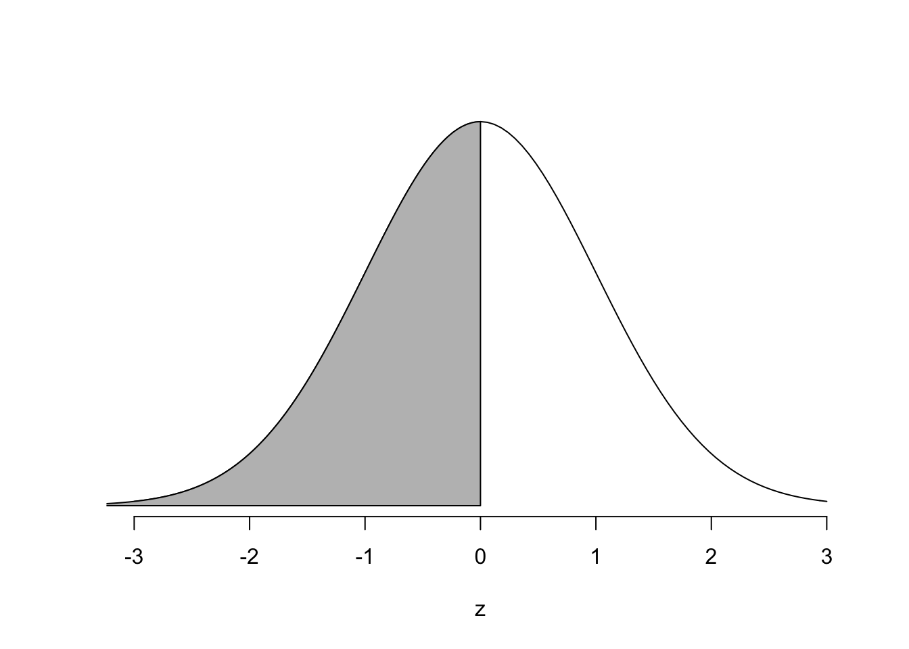

2 Kom igång
2.1 Viktiga funktioner
Jag förutsätter att du har R och RStudio installerat (eller sitter vid någon av datorerna statistik-labbarna). Som tidigare nämnts så kommer detta inte vara någon genomgående guide till R, men det finns ett par saker som är viktiga att nämna innan vi kör igång.
Skriver du 1+1 så kommer R ge dig 2.
1+1
## [1] 2Du kan också skapa ett objekt med <- som kallas the assign operator.
x <- 1+1Notera att R inte kommer skriva ut vad x är förrän du ber om det
x
## [1] 2I detta dokument kommer resultat från R alltid föregås av ##. Det är så du kan se skillnad på vad jag skriver och vad R ger tillbaka. Ibland kommer du även se enskilda # i koden. Allting som skrivs efter # behandlas av R som icke-kod. Det vill säga, jag kommer ofta använda # kommentar i koden för att förtydliga någonting jag gör.
Vektorer är den absolut vanligaste datatypen i R, och du kommer vid flera tillfällen behöva skapa vektorer. Ofta skapar vi vektorer med funktionen c(). För att se om ett objekt är en vektor använder du med framgång is.vector.
x <- c(1,5,7,2,4,6,7) # jag skapar en vektor och kallar den x
is.vector(x) # jag frågar R om x är en vektor
## [1] TRUEI detta fallet är x alltså en numerisk vektor, men det finns andra sorter.
y <- c("R","är","kul")
is.vector(y)
## [1] TRUE
is.numeric(y)
## [1] FALSE
is.character(y)
## [1] TRUEy är alltså en character vector. Dessa objekt kommer i vårt fall ofta vara stickprov. Låt säga att vi har frågat några personer om deras längd.
stickprov <- c(170, 165, 151, 191, 180, 172, 181, 166, 155,
194, 166, 175, 144, 188, 192, 164, 178, 201)Vi kan enkelt hitta stickprovsstorlek, medelvärde, standardavvikelse och skapa ett histogram
length(stickprov) # längd (stickprovsstorlek)
## [1] 18
mean(stickprov) # medelvärde
## [1] 174.0556
sd(stickprov) # standardavvikelse
## [1] 15.64109
hist(stickprov)
Låt säga att jag har två vektorer, en med namn på universitet och en med antal studenter (enligt wikipedia).
namn <- c("UU", "KTH", "SU", "LU")
studenter <- c(24623, 12000, 29087, 40000)Om jag istället för att ha två separata objekt, namn och studenter bara vill ha ett objekt. Då skapar jag med fördel en såkallad data frame, med funktionen cbind.data.frame()
z <- cbind.data.frame(namn,studenter)
is.vector(z) # z är inte längre en vektor
## [1] FALSE
is.data.frame(z) # z är en data frame
## [1] TRUESå hur ser z ut?
z
## namn studenter
## 1 UU 24623
## 2 KTH 12000
## 3 SU 29087
## 4 LU 40000För att “komma åt” data från en data frame kan jag använda $.
z$studenter
## [1] 24623 12000 29087 40000Eftersom z$studenter är en numerisk vektor kan jag göra precis samma sak på z$studenter som jag kunde göra på stickprovet ovan.
mean(z$studenter)
## [1] 26427.5
sd(z$studenter)
## [1] 11585.83Skulle jag försöka göra samma sak på z$namn får jag en varning och resultatet blir NA. Jag kan naturligtvis inte räkna ut medelvärdet av fyra namn.
mean(z$namn)
## Warning in mean.default(z$namn): argument is not numeric or logical:
## returning NA
## [1] NA2.2 Funktioner och paket
gapminder
En sak som är bra med RStudio är att det finns väldigt bra dokumentation utan att du behöver gå till din webbläsare och söka. Om du undrar hur en funktion fungerar så räcker det ofta med att skriva ett frågetecken följt av funktionens namn, ex: ?mean, och en hjälp-sida visas i din “viewer pane” till höger. Längst ner på hjälp-sidan finns ofta enkla exempel.
Många funktioner i R kommer från externa paket. Vissa av dem är otroligt enkla att använda, andra tar lång tid att lära sig. Vem som helst kan skriva ett paket, och de är enkla att installera. Det finns otroligt många paket, och användningsområdena är nästan lika många. För att demonstrera hur installationen av ett paket går till kan vi titta på ett paket som heter gapminder, som innehåller data tillänglig på Gapminder.org.
Första gången du använder ett paket behöver du installera det. Det gör du genom att skriva
install.packages("gapminder")Observera citationstecken. Detta behöver du bara göra en gång på din dator. När du vill använda paketet i framtiden måste du, varje gång du öppnar RStudio, skriva
library(gapminder)Paketet gapminder är ett litet paket och innehåller inga funktioner, bara dataset. Ett av dataseten heter gapminder och innehåller data på bland annat förväntad linvslängd, population, BNP etc. Du laddar ner datan genom att helt enkelt skriva
gapminder## # A tibble: 1,704 x 6
## country continent year lifeExp pop gdpPercap
## <fct> <fct> <int> <dbl> <int> <dbl>
## 1 Afghanistan Asia 1952 28.8 8425333 779.
## 2 Afghanistan Asia 1957 30.3 9240934 821.
## 3 Afghanistan Asia 1962 32.0 10267083 853.
## 4 Afghanistan Asia 1967 34.0 11537966 836.
## 5 Afghanistan Asia 1972 36.1 13079460 740.
## 6 Afghanistan Asia 1977 38.4 14880372 786.
## 7 Afghanistan Asia 1982 39.9 12881816 978.
## 8 Afghanistan Asia 1987 40.8 13867957 852.
## 9 Afghanistan Asia 1992 41.7 16317921 649.
## 10 Afghanistan Asia 1997 41.8 22227415 635.
## # ... with 1,694 more rowsDu behöver inte bry dig om texten A tibble: 1,704 x 6. En tibble är bara en sorts data frame. Vi kan försäkra oss om detta genom att kolla så att gm nedan is.data.frame()
is.data.frame(gapminder)
## [1] TRUEDet vill säga, det är fritt fram att göra alla sorters beräkningar på detta data set precis som vi gjorde på vår data frame med studenter och universitet ovan. Faktum är i sektion 5.4 har visar jag lite olika funktioner, grafer och beräkningar du kan göra på just detta data set.
stats
Ett annat paket som, likt de flesta andra paket, faktiskt innehåller flera funktioner är stats som innehåller funktioner för statistiska beräkningar med mera. Här är ett par exempel funktioner. stats är förinstallerat och igång vid uppstart, så du behöver varken installera det med install.packages("stats") eller skriva library(stats).
Ett exempel på funktioner i stats är rnorm() som genererar slumpmässiga tal från normalfördelningen.
rnorm(n = 5, mean = 0, sd = 1) # Ger oss fem slumpmässiga nummer från N(0,1)
## [1] 0.56342007 0.47791866 0.04494871 -2.15711095 -0.15215089n, mean och sd är stickprovsstorlek, medelvärde och standardavvikelse respektive. De kallas argument. Funktionen rnorm() har bara dessa tre argument, och de behöver inte skrivas ut. Det vill säga, så länge du håller koll på i vilken ordning argumenten kommer så kan du lika gärna skriva
rnorm(5,0,1) # Samma resultat (men så klart nya tal)
## [1] -0.919841975 -0.645369495 0.003619549 1.105885779 -0.236082266Ofta har funktionernas argument ett “default” värde. Det vill säga, ett värde på argumentet om du inte själv specifierar det. I fallet rnorm() kan du säkert gissa dig till vilket medelvärde och vilken standardavvikelse som är default, nämligen mean=0 och sd=1, det vill säga Z-fördelningen. Stickprovsstorlek har däremot inget default, och måste specifieras manuellt.
rnorm(5)
## [1] 0.69932743 -2.16824661 0.86137501 -0.07115046 -0.62172618Låt oss ta ett större stickprov, spara resultatet som x och skapa ett histogram, med funktionen hist().
x <- rnorm(100000)
hist(x)
Lek runt lite med de olika argumenten. För en full lista med alla argument, titta på hjälpsidan genom ?hist
hist(x,
breaks = 100,
col = "pink",
ylab = "text på y-axeln",
xlab = "text på x-axeln",
main = "Stickprov om 100,000 från N(0,1)")
En annan funktion vi kommer använda är pnorm(). pnorm() ger dig arean under en normalfördelningskurva för en given normalfördelning. Säg till exempel att vi har en normalfördelning med medelvärde 0 och standardavvikelse 1, det vill säga \(N(0,1)\). Med pnorm() kan du då hitta \(Pr(Z\leq z)\), det vill säga, sannolikheten att ett slumpmässigt valt tal från Z-fördelningen är mindre eller lika med \(z\). För \(z=0\) skriver du
pnorm(0, mean = 0 , sd=1)
## [1] 0.5vilket är samma som den skuggade delen nedan

Du kan såklart även hitta arean mellan två punkter genom att subtrahera, precis som du gör när du hittar \(Pr(0\leq Z \leq 1)\) för hand.
pnorm(1, mean = 0 , sd=1) - pnorm(0, mean = 0 , sd=1)
## [1] 0.3413447Vilket motsvara arean

Faktum är att Tabell 5.2A i formelsamlingen kan återskapas genom att kalla funktionen pnorm() på varje tal i sekvensen \(0, 0.01, 0.02, 0.03, ... , 3.59\). För at helt återskapa Tabell 5.2A så måste vi också avrunda varje sannolikhet till 4 decimaler med round().
round(pnorm(seq(0,3.59,by=0.01),mean = 0,sd = 1),4)## [1] 0.5000 0.5040 0.5080 0.5120 0.5160 0.5199 0.5239 0.5279 0.5319 0.5359
## [11] 0.5398 0.5438 0.5478 0.5517 0.5557 0.5596 0.5636 0.5675 0.5714 0.5753
## [21] 0.5793 0.5832 0.5871 0.5910 0.5948 0.5987 0.6026 0.6064 0.6103 0.6141
## [31] 0.6179 0.6217 0.6255 0.6293 0.6331 0.6368 0.6406 0.6443 0.6480 0.6517
## [41] 0.6554 0.6591 0.6628 0.6664 0.6700 0.6736 0.6772 0.6808 0.6844 0.6879
## [51] 0.6915 0.6950 0.6985 0.7019 0.7054 0.7088 0.7123 0.7157 0.7190 0.7224
## [61] 0.7257 0.7291 0.7324 0.7357 0.7389 0.7422 0.7454 0.7486 0.7517 0.7549
## [71] 0.7580 0.7611 0.7642 0.7673 0.7704 0.7734 0.7764 0.7794 0.7823 0.7852
## [81] 0.7881 0.7910 0.7939 0.7967 0.7995 0.8023 0.8051 0.8078 0.8106 0.8133
## [91] 0.8159 0.8186 0.8212 0.8238 0.8264 0.8289 0.8315 0.8340 0.8365 0.8389
## [101] 0.8413 0.8438 0.8461 0.8485 0.8508 0.8531 0.8554 0.8577 0.8599 0.8621
## [111] 0.8643 0.8665 0.8686 0.8708 0.8729 0.8749 0.8770 0.8790 0.8810 0.8830
## [121] 0.8849 0.8869 0.8888 0.8907 0.8925 0.8944 0.8962 0.8980 0.8997 0.9015
## [131] 0.9032 0.9049 0.9066 0.9082 0.9099 0.9115 0.9131 0.9147 0.9162 0.9177
## [141] 0.9192 0.9207 0.9222 0.9236 0.9251 0.9265 0.9279 0.9292 0.9306 0.9319
## [151] 0.9332 0.9345 0.9357 0.9370 0.9382 0.9394 0.9406 0.9418 0.9429 0.9441
## [161] 0.9452 0.9463 0.9474 0.9484 0.9495 0.9505 0.9515 0.9525 0.9535 0.9545
## [171] 0.9554 0.9564 0.9573 0.9582 0.9591 0.9599 0.9608 0.9616 0.9625 0.9633
## [181] 0.9641 0.9649 0.9656 0.9664 0.9671 0.9678 0.9686 0.9693 0.9699 0.9706
## [191] 0.9713 0.9719 0.9726 0.9732 0.9738 0.9744 0.9750 0.9756 0.9761 0.9767
## [201] 0.9772 0.9778 0.9783 0.9788 0.9793 0.9798 0.9803 0.9808 0.9812 0.9817
## [211] 0.9821 0.9826 0.9830 0.9834 0.9838 0.9842 0.9846 0.9850 0.9854 0.9857
## [221] 0.9861 0.9864 0.9868 0.9871 0.9875 0.9878 0.9881 0.9884 0.9887 0.9890
## [231] 0.9893 0.9896 0.9898 0.9901 0.9904 0.9906 0.9909 0.9911 0.9913 0.9916
## [241] 0.9918 0.9920 0.9922 0.9925 0.9927 0.9929 0.9931 0.9932 0.9934 0.9936
## [251] 0.9938 0.9940 0.9941 0.9943 0.9945 0.9946 0.9948 0.9949 0.9951 0.9952
## [261] 0.9953 0.9955 0.9956 0.9957 0.9959 0.9960 0.9961 0.9962 0.9963 0.9964
## [271] 0.9965 0.9966 0.9967 0.9968 0.9969 0.9970 0.9971 0.9972 0.9973 0.9974
## [281] 0.9974 0.9975 0.9976 0.9977 0.9977 0.9978 0.9979 0.9979 0.9980 0.9981
## [291] 0.9981 0.9982 0.9982 0.9983 0.9984 0.9984 0.9985 0.9985 0.9986 0.9986
## [301] 0.9987 0.9987 0.9987 0.9988 0.9988 0.9989 0.9989 0.9989 0.9990 0.9990
## [311] 0.9990 0.9991 0.9991 0.9991 0.9992 0.9992 0.9992 0.9992 0.9993 0.9993
## [321] 0.9993 0.9993 0.9994 0.9994 0.9994 0.9994 0.9994 0.9995 0.9995 0.9995
## [331] 0.9995 0.9995 0.9995 0.9996 0.9996 0.9996 0.9996 0.9996 0.9996 0.9997
## [341] 0.9997 0.9997 0.9997 0.9997 0.9997 0.9997 0.9997 0.9997 0.9997 0.9998
## [351] 0.9998 0.9998 0.9998 0.9998 0.9998 0.9998 0.9998 0.9998 0.9998 0.9998Motsvarande funktion för att hitta vilket z-värde som representerar en given sannolikhet (Tabell 5.2B) är funktionen qnorm(). Tabell 5.2B ger dig vilket Z-värde som har \(P\) procent till höger om sig, medan qnorm() ger dig vilket z-värde som har \(P\) procent till vänster om sig. Så om vi skriver -qnorm() får vi samma resultat som tabellen i formelsamligen. Det vill säga
-qnorm(0.025, mean = 0, sd = 1)
## [1] 1.959964Vilket motsvara följande area under Z-fördelningen.

Det vill säga, sannolikheten \(2.5 \%\) är associerat med z-värdet \(1.959964 \approx 1.96\)